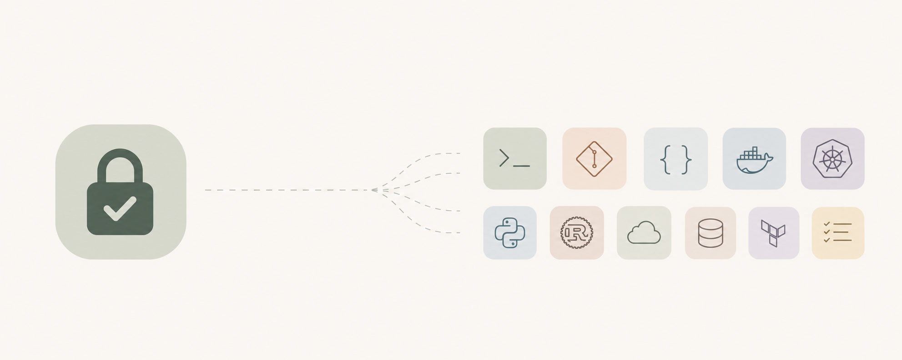

never-ask-again
Permission allowlists for AI coding agents, so yours stops asking and still cannot nuke your laptop.
- 971 rules
- 20 ecosystems
- 7 agents
- 0 dependencies
- MIT
Install
Read https://raw.githubusercontent.com/josipledic/never-ask-again/main/INSTALL-AGENT.md and follow it
Paste that into any of the six agents. It works out which one it is, merges into your existing config without clobbering it, and shows you a diff first. It will apply the deny block on its own, and it stops and waits for you before adding a single allow rule.

The design rule
Reversible and local.
Touches remote state or installs code.
Destroys, escalates, or exfiltrates.
terraform plan runs. Reversible.
terraform apply asks. Changes production.
terraform state rm never runs. No recovery path.
Install
Six agents, one rule set
Or skip the agent-driven install and copy the generated file yourself.
These tools disagree about which rule wins when two of them match. Claude Code takes the first match with deny beating ask beating allow. OpenCode takes the last match. Oh My Pi takes the first match in one flat list. Two of those are exact opposites, so the rules are generated per agent rather than copied between them.
Coverage
What it actually covers
Grouped by ecosystem so you can delete the ones you do not use.
- Core15 · 3 · 100
- Version control37 · 5 · 18
- Node and TypeScript105 · 5 · 0
- Go33 · 2 · 0
- Python42 · 5 · 0
- Rust20 · 2 · 0
- JVM and build systems49 · 0 · 1
- .NET6 · 0 · 0
- Swift and mobile24 · 0 · 0
- C and C++18 · 0 · 0
- Ruby, Elixir, Haskell19 · 0 · 0
- Task runners23 · 2 · 0
- Containers26 · 8 · 8
- Kubernetes43 · 5 · 24
- Cloud CLIs20 · 0 · 30
- Infrastructure as code47 · 10 · 32
- Databases and migrations29 · 13 · 11
- Forges and CI20 · 7 · 14
- Publishing0 · 0 · 15
- CLI utilities73 · 2 · 0
Gotchas
Two things that make most allowlists useless
The wrappers that are not stripped
Claude Code strips timeout, nice, nohup and bare xargs before matching a rule. It does not strip npx, uvx, docker exec or devbox run, which execute whatever follows them.
Bash(npx *) approves any package on npm
Bash(npx tsc *) what this repo writes instead
Every wrapper rule here names the inner command, and CI fails the build on any that does not.
A broad deny cannot carry exceptions
Order is deny, then ask, then allow. First match wins, and specificity does not break ties.
deny Bash(aws *)
allow Bash(aws s3 ls) dead, the deny matched first
So the cloud sections allow the read verbs and deny the specific mutating ones. CI simulates the evaluation order across all 971 rules and fails on any rule that can never fire. It found eight while this was being built.
Why bother
Why not just turn permissions off
Because the failure mode is not the agent going rogue. It is the agent being confidently wrong at 2am, running terraform state rm on the wrong workspace because a stale plan said the resource was orphaned, and there being no undo.
Prompts are not there to catch malice. They are there to catch the thing you would also have caught, if you had been looking. An allowlist keeps them for exactly those cases and drops them everywhere else.
How it is built
One hand-maintained source, grouped by reason, compiled into six formats. Adding a rule is one line. CI runs every test fixture through a simulation of Claude Code's evaluation order and through the real codex execpolicy binary, then fails if a decision comes back inverted.
[[group]] decision = "deny" why = "Rewrites shared history. Run --force-with-lease yourself if you mean it." cmds = ["git push --force", "git push -f", "git push --mirror"] match = ["git push --force origin main"] not_match = ["git push origin main"]
Python 3.11 or newer, standard library only. No dependencies to install and nothing to build before you can copy a file.